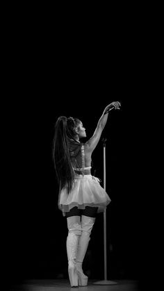

Danh mục âm Nhạc
Ariana Grande
Heaven sent you to me
I'm just hopin' I don't repeat history
Boy, I'm tryna meet your mama on a Sunday
Then make a lotta love on a Monday (ah-ah)
Never need no (no), no one else, babe
'Cause I'll be
Switchin' the positions for you
Cookin' in the kitchen and I'm in the bedroom
I'm in the Olympics, way I'm jumpin' through hoops
Know my love infinite, nothin' I wouldn't do
That I won't do, switchin' for you
Perfect, perfect
You're too good to be true (you're too good to be true)
But I get tired of runnin'
Fuck it, now I'm runnin' with you (wit' you)
Said, boy, I'm tryna meet your mama on a Sunday
Then make a lotta love on a Monday (ah-ah)
Never need no (no), no one else, babе
'Cause I'll be
Switchin' the positions for you (for you, ah)
Cookin' in thе kitchen and I'm in the bedroom
I'm in the Olympics, way I'm jumpin' through hoops
Know my love infinite, nothing I wouldn't do
That I won't do, switchin' for you
Cookin' in the kitchen and I'm in the bedroom (bedroom)
I'm in the Olympics way, I'm jumpin' through hoops
Know my love infinite, nothing I wouldn't do
That I won't do, switching for you
This some shit that I usually don't do (yeah)
But for you, I kinda, kinda want to
'Cause you're down for me and I'm down too (and I'm down too)
Yeah, I'm down too, switching the positions for you
This some shit that I (yeah) usually don't do (don't do)
But for you, I kinda, kinda want to
'Cause you're down for me and I'm down too
Switchin' the positions for you
Cookin' in the kitchen and I'm in the bedroom
I'm in the Olympics way, I'm jumpin' through hoops (to you, to you)
Know my love infinite, nothing I wouldn't do (do)
That I won't do, switchin' for you
Cookin' in the kitchen and I'm in the bedroom
I'm in the Olympics way, I'm jumpin' through hoops
Know my love infinite, nothin' I wouldn't do
That I won't do, switchin' for you
Yeah
Ah, yeah
Ah (ah), yeah
